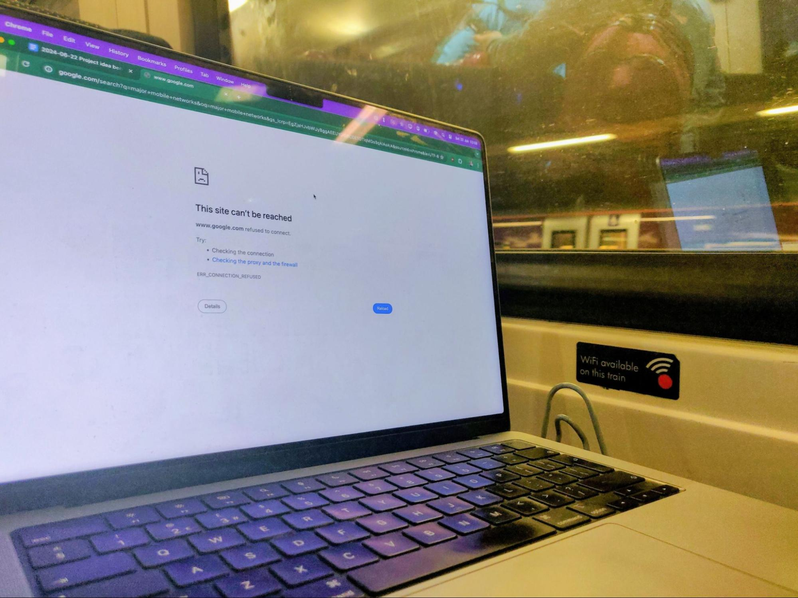

A thing I'd like to exist: benchmarks for train internet
I recently visited Loughborough by train, and found the internet on the route to be absolutely awful - not sufficient for light web browsing or dealing with emails. I’ve also fairly recently taken trains from London to Oxford on which the internet was great.
Internet connectivity massively affects my experience of travelling by train: it’s the difference between viewing the time as ‘wasted travel time’ and ‘potentially productive working time’. Recent analysis estimated better internet on trains would be worth £9.9bn to the UK’s economy1Over the standard UK rail planning horizon of 60 years, with a 3.5% then 3% discount rate.
It’s expected to cost £200m to fix, and return about £376m a year. Presumably there would also be ongoing upkeep and maintenance costs, but I think these calculations still very clearly make the case for fixing this.
, with a cost-benefit ratio of almost 50:1 - much higher than the best-case ever presented for HS2 of 2.5:1.2
Proposal
The proposal: benchmark internet speed and reliability on different train routes with different network operators.
This would be incredibly useful for helping people who travel by train a lot decide on a mobile operator. It would also likely put pressure on various networks to improve their coverage speeds on these key routes.
Specifically, I think it’d be great to know for a given train route how fast and stable the internet connection is with:
- Train WiFi
- Mobile data on the major mobile operators in the UK - that’s EE, O2, Three and Vodafone3
Most other brands, like iD Mobile, Lebara and Lycamobile, are MVNOs who resell use of one of these four networks.
This might look like a speed test over the route, maybe connected with a GPX track to identify ‘dead spots’.
Ideally this should be communicated in a way that non-experts can quickly understand. For example, a pass/fail for ‘okay for continuous light browsing and emails’.
Who might do this and why?
There are a few ways I could see this happening:
- A testing organisation like Ofcom or Which? does these tests. The results are either government funded, funded by a mobile network, or could be put behind a paywall.
- Train operating companies and/or mobile network operators voluntarily provide information about network coverage and average wifi speeds on different routes. This could demonstrate that they provide a high quality service. I’m not sure whether these statistics are collected in a format suitable for this analysis already, but it seems quite possible (based on the privacy policies of most of these companies).
- A train ticket retailer like Trainline sends a survey to a sample of customers after their journeys asking how the internet was on their route (including how they accessed the internet e.g. WiFi or mobile data, how they were trying to use it, and how well it performed at this task). They could then display this information when purchasing tickets, increasing the value proposition of buying through them over other ticket sellers.
- A navigation provider like Google Maps asks people taking the train how the internet is, or ideally offers to run a speed test on their phone. This could be similar to how they currently ask about crowdedness. Again, they could display this when making routing suggestions. This could attract people to using these apps for navigation by offering this as a unique service.
- A crowdsourcing community builds or upgrades an app to support collecting data on these routes (and someone still would need to do the analysis).
What's been done already?
After getting back home, I briefly checked what had been done already:
- The most comprehensive report was by transportfocus back in 2020. This looks pretty excellent, although I assume in 4 years the technology has advanced and it’d be great to see this re-done. I also couldn’t find where this was translated for the general public, so it is quick and easy for people to understand what this means for them.
- A company called NetForecast seems to have some technology for measuring this, specifically for trains.
Separately there are people working on improving connectivity on trains, which is exciting!
- In January 2023, Three focused on improving connectivity from London to Brighton, in partnership with Cellnex, Network Rail and Govia Thameslink Railway (which runs Southern, Thameslink and Gatwick Express trains).
- Evo-rail is owned by First Group, and have been researching a solution using the 5G network to provide better connectivity to trains. They’ve done some smaller tests, and plan to do a full installation on the London to Hampshire route in August 2024.
- There’s a whole conference for people working on improving train wifi - the “Train Communications Systems Conference”.4
As well as a nice simple name, I love how simple and straightforward their tagline is: “The WiFi on Trains Conference”. I want more people to name themselves and describe what they do like this!
It’s next happening in November 2024.
Footnotes
-
Over the standard UK rail planning horizon of 60 years, with a 3.5% then 3% discount rate.
It’s expected to cost £200m to fix, and return about £376m a year. Presumably there would also be ongoing upkeep and maintenance costs, but I think these calculations still very clearly make the case for fixing this. ↩
-
Also, older analysis commissioned by the Department for Transport found that people would be very willing to pay for better mobile connectivity on trains. ↩
-
Most other brands, like iD Mobile, Lebara and Lycamobile, are MVNOs who resell use of one of these four networks. ↩
-
As well as a nice simple name, I love how simple and straightforward their tagline is: “The WiFi on Trains Conference”. I want more people to name themselves and describe what they do like this! ↩